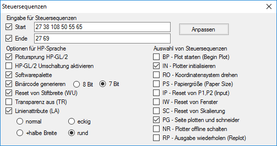

 |
Eingabe für Steuersequenzen
Start; Ende Nur bei Verwendung von Laserdruckern erforderlich. Die nötige Zahlenkombination entnehmen Sie dem Druckerhandbuch. Wenn die Steuersequenzen für bestimmte Geräte bekannt sind, werden diese wiederhergestellt. |
Optionen für HP‑Sprache
Plotursprung HP-GL/2 Muss gesetzt werden, um bei Rollenmedien den Koordinatenursprung in die linke untere Ecke zu setzen. HP-GL/2 Umschaltung aktivieren Bei Bedarf erforderlich. Die Wahl der Plottersprache ist am Plotter und programmseitig identisch einzustellen. Softwarepalette Muss gewählt werden, wenn die Steuerung der Strichbreite und Farbe von der Software kommen soll. Die Plottereinstellung muss identisch sein! Binärcode generieren Beschleunigt in Form von 8Bit oder 7Bit die Datenübertragung. Reset von Stiftbreite (WU) Wird gesetzt, um bei hintereinander ausgeführten Plotausgaben unterschiedliche Stiftbreiten zu benutzen. Transparenz aus (TR) Wird gewählt, wenn keine Graustufen gewünscht sind. Linienattribute Wählen Sie zwischen normalem, eckigem oder rundem Linienende bzw. geradem Abschluss mit halbem Überstand. |
Auswahl von Steuersequenzen
Vom Programm werden die nötigen Steuersequenzen vorgewählt. Falls weitere nötig sind, müssen Sie die erforderlichen Haken in die Checkboxen setzen. Informieren Sie sich im Handbuch Ihres Gerätes, falls die Benutzung von bestimmten Einstellungen erforderlich ist. |